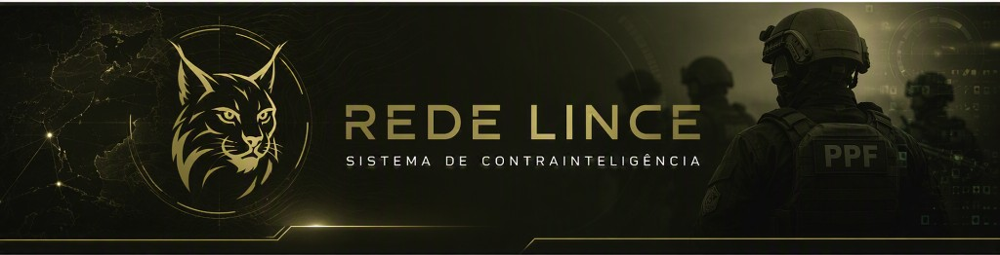

Prévia — banner institucional



Proporção 2048×460 · fundo institucional centralizado · Rede Lince à esquerda · PPF à direita · texto central preservado.

Proporção 2048×460 · fundo institucional centralizado · Rede Lince à esquerda · PPF à direita · texto central preservado.